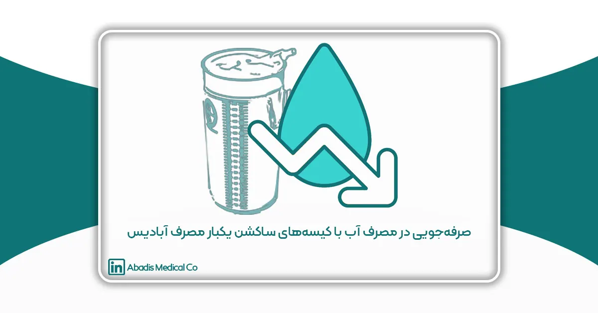
چکیده
استفاده از کیسه ساکشن یکبار مصرف در مراکز درمانی به عنوان یک راهکار مؤثر و کارآمد برای بهینهسازی مدیریت پساب های بیمارستانی، کاهش خطر انتقال عفونتهای بیمارستانی و کاهش مصرف آب در بیمارستان ها شناخته شده است. سازمان بهداشت جهانی (WHO) نیز بر اهمیت مدیریت صحیح پساب ها و پسماندهای بیمارستانی تأکید دارد و توصیه میکند که با استفاده از روشهای نوین، خطرات زیستمحیطی و بهداشتی پسماندهای بیمارستانی کاهش یابد.
شرکت آبادیس با بهرهگیری از فناوریهای پیشرفته در تولید تجهیزات پزشکی، توانسته است نیاز مراکز درمانی را به روشهای سنتی و پرهزینه کاهش داده و گام مهمی در راستای حفظ منابع زیستمحیطی بردارد. این مقاله به بررسی اثرات کیسه ساکشن یکبار مصرف آبادیس در مراکز درمانی و میزان صرفهجویی در مصرف آب میپردازد.
با توجه به افزایش نگرانیها در مورد کمبود منابع آب و نیاز به کاهش مصرف آن در بخشهای مختلف مراکز درمانی، استفاده از کیسه های ساکشن یکبار مصرف میتواند نقش مهمی در کاهش مصرف آب در مراکز درمانی ایفا کند. در این مطالعه، دادههای مربوط به مصرف آب قبل و بعد از استفاده از کیسه ساکشن یکبار مصرف آبادیس در چندین مراکز درمانی تهران جمعآوری و تحلیل شده است. نتایج نشان میدهد که استفاده از این کیسهها نه تنها باعث کاهش قابل توجه مصرف آب میشود، بلکه هزینههای مرتبط با شستشو و ضدعفونی تجهیزات ساکشن را نیز کاهش میدهد. این مقاله همچنین به بررسی مزایای بهداشتی و اقتصادی استفاده از کیسه ساکشن یکبار مصرف آبادیس میپردازد و پیشنهاداتی را برای گسترش استفاده از این فناوری در مراکز درمانی ارائه میدهد.
همچنین، همکاری و ارتباط بین کادر درمان بیمارستان ها و شرکت آبادیس در بهینهسازی کیفیت این محصول از طریق فرآیند PMCF مورد ارزیابی قرار گرفته است.
کلمات کلیدی: کیسه ساکشن یکبار مصرف، آبادیس، مراکز درمانی، صرفهجویی در مصرف آب، بهداشت، کاهش هزینهها
مقدمه
در محیطهای درمانی، کنترل عفونتهای بیمارستانی و بهینهسازی مصرف منابع از جمله آب و انرژی، از مهمترین چالشهای پیشروی مراکز درمانی است. یکی از تجهیزات کلیدی که تأثیر بسزایی در این زمینه دارد، کیسه ساکشن یکبار مصرف است. این محصول که جایگزین سیستمهای سنتی ساکشن همراه با مخازن چندبار مصرف شده است، علاوه بر کاهش احتمال انتشار عفونتهای بیمارستانی، به صرفهجویی در مصرف آب و بهبود ایمنی کادر درمان کمک میکند.
شرکت مخازن طبی آبادیس، به عنوان اولین و بزرگترین تولیدکننده کیسه ساکشن یکبار مصرف در ایران، با بهرهگیری از فناوریهای پیشرفته و رعایت استانداردهای بینالمللی، موفق به ارائه محصولی شده است که ضمن ارتقای سطح ایمنی و بهداشت بیمارستانی، از لحاظ هزینه-اثربخشی نیز برتری محسوسی نسبت به روشهای سنتی دارد. تحقیقات نشان دادهاند که استفاده از کیسههای ساکشن یکبار مصرف، میزان تماس مستقیم کارکنان درمانی با مایعات عفونی را به طور چشمگیری کاهش داده و نیاز به استریلیزاسیون و شستوشوی مخازن را حذف میکند، که این امر منجر به صرفهجویی قابل توجه در مصرف آب و هزینههای عملیاتی بیمارستانها میشود.
همکاری گسترده آبادیس با مراکز درمانی در سراسر کشور، امکان جمعآوری دادههای بالینی و اجرای فرآیندهای PMCF (Post-Market Clinical Follow-up) را فراهم کرده است. این فرآیند که از اصول کلیدی در تضمین کیفیت تجهیزات پزشکی محسوب میشود، به بهبود مستمر محصولات از طریق تحلیل دادههای واقعی بیمارستانی و بازخوردهای کادر درمان منجر میشود. در این مقاله، به بررسی تأثیرات استفاده از کیسه ساکشن یکبار مصرف بر کاهش مصرف آب در بیمارستانها و ارتقای ایمنی و بهداشت محیطهای درمانی پرداخته خواهد شد.
مواد و روشها
در این مطالعه، اطلاعات مربوط به مصرف آب در بیمارستان های ایران قبل و بعد از استفاده از کیسه ساکشن یکبار مصرف جمعآوری و تحلیل شد. روش پژوهش شامل بررسی مستندات مصرف آب، مصاحبه با کادر درمان و تحلیل دادههای مرتبط با کاهش هزینههای عملیاتی بوده است. همچنین، نقش همکاری بین تیمهای درمانی و شرکت آبادیس در بهبود کیفیت این محصول از طریق فرآیند PMCF مورد بررسی قرار گرفت.
میزان صرفهجویی در مصرف آب
یکی از مهمترین مزایای استفاده از کیسه ساکشن یکبار مصرف، کاهش چشمگیر مصرف آب در مراکز درمانی است. روشهای سنتی نیاز به شستوشوی مکرر تجهیزات، از جمله بطریهای شیشهای یا مخازن مخصوص نگهداری مایعات زاید داشتند که باعث مصرف هزاران لیتر آب در هر بیمارستان میشد.
بررسی اثرات استفاده از کیسه ساکشن یکبار مصرف در بیمارستانها
معرفی بیمارستانهای مجهز به کیسه ساکشن یکبار مصرف آبادیس
کیسههای ساکشن یکبار مصرف آبادیس در بیش از 500 بیمارستان در سراسر ایران مورد استفاده قرار گرفتهاند. این مراکز درمانی شامل بیمارستانهای آموزشی، خصوصی و دولتی هستند که با هدف ارتقای ایمنی بیمار، کاهش هزینههای عملیاتی و بهینهسازی مصرف منابع از این محصول بهره میبرند. استفاده از این تکنولوژی، نهتنها باعث بهبود استانداردهای بهداشتی شده، بلکه موجب صرفهجویی در مصرف آب و کاهش بار کاری پرسنل بیمارستانی در فرآیندهای ضدعفونی و استریلیزاسیون تجهیزات شده است.
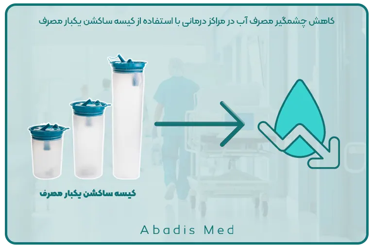
نتایج و بررسی موردی بیمارستانها
۱. بیمارستان میلاد (تهران) بیمارستان تخصصی و فوق تخصصی میلاد در تهران، واقع در بزرگراه همت، جنب برج میلاد، یکی از بزرگترین و پیشرفتهترین مراکز درمانی کشور است. این بیمارستان با ظرفیت ۱۰۰۰ تخت فعال، به ارائه خدمات درمانی تخصصی و فوق تخصصی در زمینههای مختلف پزشکی میپردازد و دارای بخشهای تخصصی متعددی از جمله ICU جراحی با ۱۶ تخت، ICU جراحی مغز و اعصاب با ۷ تخت، CCU با ۲۳ تخت و ۹ اتاق عمل است.
بررسیها نشان میدهد که پس از استفاده از کیسههای ساکشن یکبار مصرف، میزان مصرف آب در این بیمارستان به شکل قابلتوجهی کاهش یافته است؛ میزان صرفهجویی برآورد شده در مصرف آب این بیمارستان بیش از ۱۷٬۳۲۵ لیتر در طی یک سال است؛ و همچنین ۱,۷۳۲ لیتر خونابه و عفونت جمع آوری شده است.
این میزان صرفهجویی به این دلیل است که تنها یکی از بخشهای اتاق عمل بیمارستان میلاد از محصولات آبادیس استفاده میکند. در صورتی که این بیمارستان تمامی اتاقهای عمل، CCU و ICU خود را به این تجهیزات مجهز کند، میزان صرفهجویی در مصرف آب حداقل ۱۴ برابر خواهد شد.
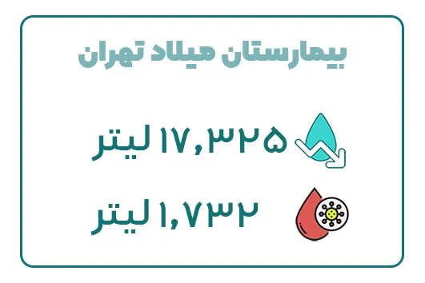
۲. بیمارستان تندیس (تهران) بیمارستان فوق تخصصی تندیس در تیرماه ۱۳۹۷ در منطقه شمال تهران، بلوار نلسون ماندلا (جردن)، خیابان تندیس، پلاک ۲ با ظرفیت ۶۳ تخت فعال و دارای بخشهای تخصصی و فوق تخصصی افتتاح شد. این بیمارستان با استفاده از کیسههای ساکشن یکبار مصرف آبادیس در طی یک سال، موفق به صرفهجویی 101٬475 لیتر آب و جمع آوری ۱۰,۱۴۷ لیتر عفونت شده است.
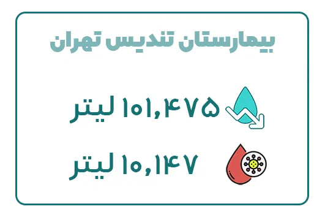
۳. بیمارستان نیکان (تهران) بیمارستان نیکان یکی از مراکز درمانی پیشرفته و تخصصی کشور است که با ظرفیت 102 تخت فعال، از دیگر مراکز درمانی است که با بهرهگیری از کیسههای ساکشن یکبار مصرف، توانسته است ۲64,۰۰۰ لیتر آب در طول یک سال صرفهجویی نماید. همچنین این مرکز درمانی موفق به جمع آوری سالانه ۲۶,۴۰۰ لیتر عفونت گردیده است.
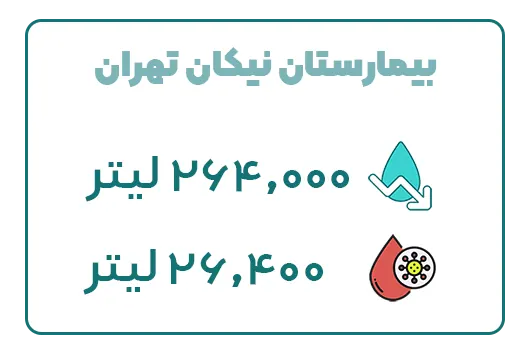
۴. بیمارستان اختر (تهران) بیمارستان اختر تهران، یکی از مراکز تخصصی ارتوپدی کشور، واقع در خیابان شریعتی، پل رومی، خیابان شریفیمنش، بنبست آذر، با ظرفیت ۱۲۰ تخت فعال، شامل بخشهای تخصصی مانند ICU جنرال، CCU، ICU قلب باز و NICU میباشد؛ این بیمارستان با استفاده از کیسههای ساکشن یکبار مصرف، موفق به صرفهجویی 74٬250 لیتر آب در طی یکسال شده است. همچنین بیمارستان اختر توانسته است در طول یک سال ۷،۴۲۵ لیتر عفونت را با محصولات آبادیس جمعآوری نماید.
۵. مجتمع بیمارستانی یاس (تهران) بیمارستان یاس تهران، یکی از مراکز تخصصی و فوقتخصصی کشور، در میدان ولیعصر، خیابان کریمخان زند، خیابان استاد نجاتاللهی شمالی (ویلا)، جنب خیابان سرو با ظرفیت ۲۶۷ تخت فعال است این مرکز با استفاده از کیسههای ساکشن یکبار مصرف، توانسته است سالانه 138٬600 لیتر در مصرف آب صرفهجویی نماید؛ و همچنین ۱۳،۸۶۰ لیتر عفونت جمعآوری نماید.
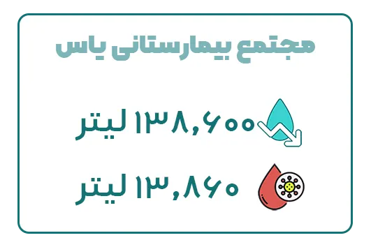
۶. بیمارستان پارس (تهران) بیمارستان پارس یکی از مراکز درمانی پیشرفته تهران واقع در میدان ولی عصر ، بلوار کشاورز ، پلاک 67 با ظرفیت 191 تخت بستری است که در حوزههای تخصصی جراحی عمومی، قلب، مغز و اعصاب، و اورژانس فعالیت میکند؛ با استفاده از کیسههای ساکشن یکبار مصرف آبادیس، بیمارستان پارس موفق به صرفهجویی 159٬637 لیتر آب در طی یک سال شده است و این میزان صرفهجویی در مصرف آب تأثیر بسزایی در کاهش هزینههای عملیاتی و حفاظت از منابع آبی دارد. بیمارستان پارس سالانه توانسته است ۱۵،۹۶3 لیتر عفونت را با استفاده از کیسه ساکشن یکبار مصرف جمعآوری نماید.
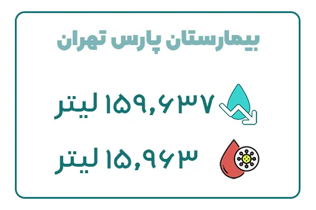
۷. بیمارستان امام خمینی (تهران) بیمارستان امام خمینی با ظرفیت 1150 تخت بستری واقع در انتهای غربی بلوار کشاورز، به عنوان یکی از بزرگترین مراکز درمانی کشور در ارائه خدمات تخصصی و فوقتخصصی شناخته شده و این بیمارستان بهواسطه استفاده از کیسه ساکشن یکبار مصرف قادر به کاهش مصرف آب به میزان 728٬392 لیتر در سال بوده است. علاوه بر صرفهجویی در مصرف آب، این بیمارستان توانسته در یک سال ۷۲،۸۳۹ لیتر عفونت را جمعآوری کند. این تغییر باعث کاهش هزینههای نگهداری تجهیزات و بهبود فرآیندهای بهداشتی در بخشهای مختلف بیمارستان شده است.
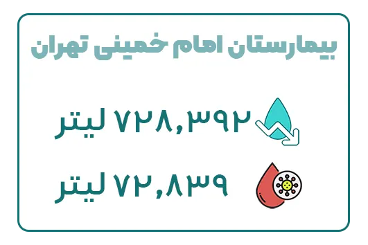
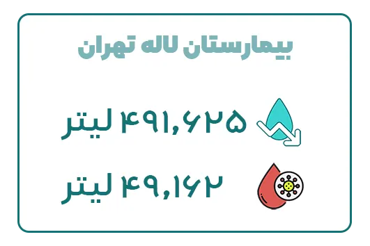
9. بیمارستان خاتمالانبیاء (تهران) بیمارستان خاتمالانبیاء واقع در خیابان ولیعصر، بالاتر از بلوار میرداماد، خیابان رشید یاسمی با ظرفیت 480 تخت بستری، یکی دیگر از بیمارستانهای پیشرفته تهران است که با استفاده از کیسههای ساکشن یکبار مصرف توانسته است 355٬162 لیتر آب در سال صرفهجویی کند. این صرفهجویی موجب کاهش مصرف آب در بخشهای مختلف بیمارستان، از جمله بخشهای اورژانس و جراحی، شده است. همچنین این بیمارستان در طول یک سال ۳۵،۵۱۶ لیتر عفونت را با استفاده از کیسه ساکشن یکبار مصرف جمعآوری کرده است.
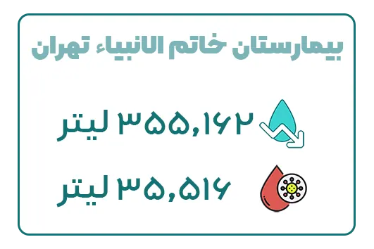
۱0. بیمارستان آتیه (تهران) بیمارستان آتیه با ظرفیت 350 تخت بستری و ارائه خدمات تخصصی در زمینههای جراحی، زنان و زایمان، و داخلی، با استفاده از کیسه ساکشن یکبار مصرف آبادیس، توانسته است در طول یک سال 261٬112 لیتر آب صرفهجویی کند. این بیمارستان بهواسطه این تغییر، نهتنها در مصرف منابع آبی خود صرفهجویی کرده، بلکه به بهبود کیفیت خدمات درمانی و بهداشتی خود نیز دست یافته است. بیمارستان آتیه ۲۶،۱۱۱ لیتر خونابه و ضایغات عفونی را در طی یک سال با استفاده از کیسههای ساکشن یکبار مصرف جمعآوری کرده است.
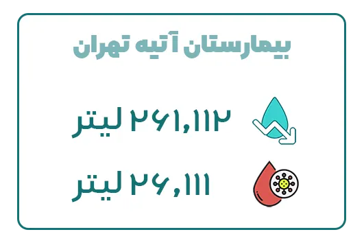
11.بیمارستان عرفان (تهران) بیمارستان تخصصی و فوقتخصصی عرفان در تهران، واقع در منطقه سعادتآباد، یکی از مراکز درمانی خصوصی پیشرو در کشور است؛ این بیمارستان در زمینی به مساحت ۴۴۸۰ متر مربع و با زیربنای ۲۰۰۰۰ متر مربع در ۹ طبقه احداث شده و دارای ۲۰۰ تخت فعال است که شامل اتاقهای خصوصی، دو تخته، VIP و ۷۰ تخت ویژه است؛ بیمارستان عرفان توانسته است با استفاده از کیسه ساکشن یکبار مصرف سالانه 432٬025 لیتر در مصرف آب صرفه جویی نماید و همچنین ۴۳,۲۰۵ لیتر عفونت را در طی یک سال جمعآوری نماید.
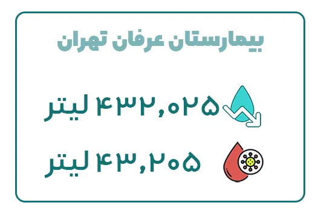
12.بیمارستان امام حسین (تهران) بیمارستان امام حسین تهران واقع در خیابان شهید مدنی به عنوان بزرگترین مرکز آموزشی پژوهشی درمانی وابسته به دانشگاه علوم پزشکی شهید بهشتی با 622 تخت مصوب حاصل ادغام سه مرکز درمانی جرجانی، هشتم شهریور و شهید سهامی است.بیمارستان امام حسین (ع) توانسته است با استفاده از کیسه ساکشن یکبار مصرف، سالانه ۴۱4,727 لیتر در مصرف آب صرفهجویی نماید و همچنین ۴۱,472 لیتر عفونت را در طی یک سال جمعآوری کند. این اقدام نهتنها باعث کاهش هزینههای عملیاتی بیمارستان شده، بلکه نقش مهمی در حفظ محیط زیست و بهبود بهداشت بیمارستانی ایفا کرده است.
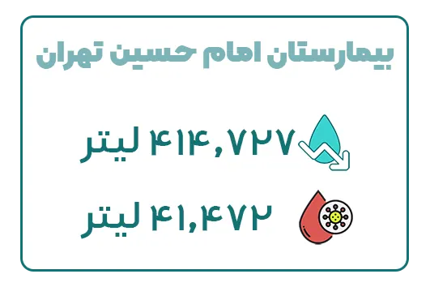
13.بیمارستان عرفان نیایش (تهران) بیمارستان عرفان نیایش تهران در بزرگراه نیایش غرب، بعد از بلوار کبیری طامه، خیابان امام حسین، تقاطع بهار، شماره 17 یکی از بزرگترین بیمارستانهای خصوصی ایران است که زمینههای تخصصی متنوعی را تحت پوشش قرار میدهد.
این بیمارستان در زمینی به مساحت ۵۰۰۰ متر مربع و با زیربنای بیش از ۳۱۰۰۰ متر مربع در ۱۱ طبقه احداث شده و دارای ۲۵۰ تخت بستری است که شامل بیش از ۶۰ تخت ویژه و ۲۳ اتاق عمل مجهز است.
بیمارستان عرفان نیایش با استفاده از کیسههای ساکشن یکبار مصرف و در طی چند سال همکاری با شرکت مخازن طبی آبادیس، موفق شده است سالانه 410,025 لیتر از مصرف آب را کاهش داده و 41,002 لیتر عفونت را جمعآوری نماید.
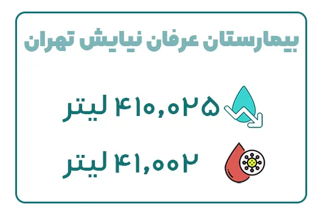
14.بیمارستان مسیح دانشوری (تهران) بیمارستان مسیح دانشوری، یکی از مراکز درمانی تخصصی و فوقتخصصی کشور، واقع در شمال تهران، بهعنوان قطب اصلی بیماریهای ریوی و پیوند ریه در ایران شناخته میشود. این بیمارستان با دارا بودن ۳۰۰ تخت فعال شامل بخشهای ICU، CCU، اورژانس، جراحی و داخلی، خدمات گستردهای در حوزه درمان بیماریهای تنفسی و عفونی ارائه میدهد.
بیمارستان مسیح دانشوری با بهرهگیری از کیسههای ساکشن یکبار مصرف و همکاری چندساله با شرکت مخازن طبی آبادیس، موفق شده است سالانه 339,157 لیتر از مصرف آب را کاهش داده و 33,915 لیتر عفونت را جمعآوری کند. استفاده از این فناوری نقش مهمی در بهبود استانداردهای بهداشتی، کاهش هزینههای عملیاتی و کنترل عفونتهای بیمارستانی در این مرکز داشته است.
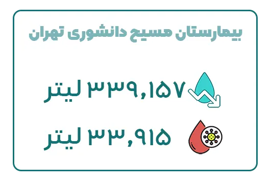
15.بیمارستان بهمن (تهران) بیمارستان بهمن، یکی از مراکز درمانی خصوصی پیشرفته در تهران، در منطقه شهرک غرب، خيابان ايران زمين شمالی واقع شده و خدمات تخصصی و فوقتخصصی گستردهای را در حوزههای مختلف پزشکی ارائه میدهد. این بیمارستان با ۲۰۰ تخت فعال شامل بخشهای ICU، CCU، اورژانس، جراحی و داخلی، به یکی از مراکز درمانی معتبر کشور تبدیل شده است.
بیمارستان بهمن با بهرهگیری از کیسههای ساکشن یکبار مصرف توانسته است سالانه 286٬687 لیتر در مصرف آب صرفه جویی نماید و همچنین 28,668 لیتر عفونت را در طی یک سال جمعآوری نماید.
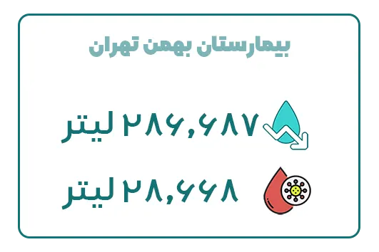
16.بیمارستان پارسیان (تهران) بیمارستان پارسیان، یکی از مراکز درمانی خصوصی تهران، در منطقه سعادت آباد سرو شرقی میدان فرهنگ واقع شده و خدمات تخصصی و فوقتخصصی متنوعی را در حوزههای مختلف پزشکی ارائه میدهد. این بیمارستان با ۱۰۰ تخت فعال شامل بخشهای ICU، CCU، جراحی، داخلی و اورژانس، به یکی از مراکز درمانی مطرح در پایتخت تبدیل شده است.
این بیمارستان بهواسطه استفاده از کیسه ساکشن یکبار مصرف قادر به کاهش مصرف آب به میزان 205٬535 لیتر در سال بوده است. علاوه بر صرفهجویی در مصرف آب، این بیمارستان توانسته در یک سال 20،553 لیتر عفونت را جمعآوری کند.
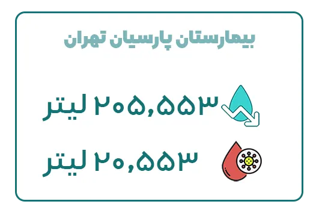
17.بیمارستان مرکز طبی کودکان (تهران) بیمارستان مرکز طبی کودکان، یکی از مراکز تخصصی و فوقتخصصی اطفال در تهران به شمار میرود که با ارائه خدمات پیشرفته در زمینه تشخیص و درمان بیماریهای کودکان، به عنوان قطب اصلی ارتقای سلامت اطفال در کشور شناخته میشود. این بیمارستان با داشتن ۴۰۰ تخت فعال در بخشهای ICU ویژه کودکان، NICU، اورژانس، جراحی و داخلی، خدمات جامع و تخصصی در حوزه پزشکی اطفال ارائه میدهد.
بررسیها نشان میدهد که با بهرهگیری از کیسههای ساکشن یکبار مصرف ، میزان مصرف آب در این بیمارستان به شکل قابلتوجهی کاهش یافته است؛ میزان صرفهجویی برآورد شده در مصرف آب این بیمارستان بیش از 201٬767 لیتر در طی یک سال است؛ و همچنین 20,176 لیتر خونابه و عفونت جمع آوری شده است.
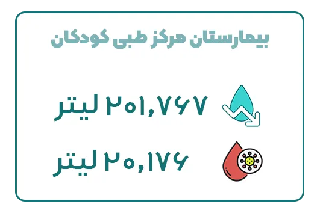
18.بیمارستان نور شهریار (تهران) بیمارستان نور شهریار تهران بزرگترین بیمارستان جنوب غرب استان تهران واقع در شهریار، شهرک صدف از دیگر مراکز درمانی است که با بهرهگیری از کیسههای ساکشن یکبار مصرف، توانسته است 199,237لیتر آب در طول یک سال صرفهجویی نماید. همچنین این مرکز درمانی موفق به جمع آوری سالانه 19,923 لیتر عفونت گردیده است.
19.بیمارستان ایرانمهر (تهران) بیمارستان ایرانمهر، یکی از مراکز درمانی خصوصی معتبر در تهران است که در سال ۱۳۵۴ تأسیس شده و در ضلع شرقی خیابان شریعتی، نرسیده به دوراهی قلهک واقع شده است.
بیمارستان ایرانمهر با داشتن ۱۵۷ تخت فعال، خدمات تخصصی و فوقتخصصی در زمینههای داخلی، جراحی، اطفال، زنان و زایمان ارائه می دهد و با استفاده از کیسه ساکشن یکبار مصرف آبادیس، توانسته است 183٬150 لیتر آب صرفهجویی کند و همچنین ۱8،315 لیتر عفونت جمعآوری نماید. این بیمارستان بهواسطه این تغییر، نهتنها در مصرف منابع آبی خود صرفهجویی کرده، بلکه به بهبود کیفیت خدمات درمانی و بهداشتی خود نیز دست یافته است.
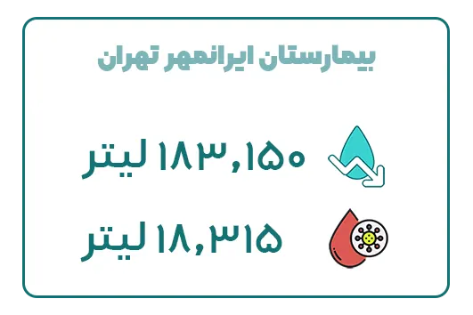
20.بیمارستان کسری (تهران) بیمارستان کسری، یکی از بیمارستانهای تخصصی و فوقتخصصی در تهران است که در سال ۱۳۷۹ تأسیس شده و در میدان آرژانتین، خیابان الوند واقع شده است.
بیمارستان کسری با استفاده از کیسههای ساکشن یکبار مصرف آبادیس در طی یک سال، موفق به صرفهجویی 178٬200 لیتر آب و جمع آوری ۱7,820 لیتر عفونت شده است.
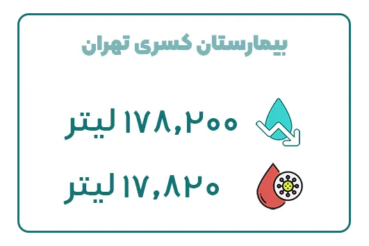
21.بیمارستان مهر (تهران) بیمارستان مهر، یکی از بیمارستانهای تخصصی و فوقتخصصی معتبر در تهران با ۱۷۰ تخت فعال است که در میدان ولیعصر، خیابان زرتشت غربی واقع شده است.
بیمارستان مهر موفق به صرفهجویی ۱76٬962 لیتر آب در طی یک سال شده است و این میزان صرفهجویی در مصرف آب تأثیر بسزایی در کاهش هزینههای عملیاتی و حفاظت از منابع آبی دارد. بیمارستان مهر سالانه توانسته است ۱7،696 لیتر عفونت را با استفاده از کیسه ساکشن یکبار مصرف جمعآوری نماید.
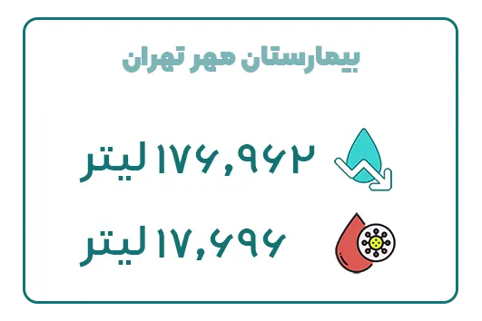
22.بیمارستان تریتا (تهران) بیمارستان تریتا، یکی از بیمارستانهای تخصصی و فوقتخصصی با 200 تخت فعال تحت پوشش دانشگاه علوم پزشکی ایران است که در بزرگراه همت ، بزرگراه شهید خرازی ، خروجی بیمارستان تریتا واقع شده است.
بیمارستان تریتا با استفاده از کیسههای ساکشن یکبار مصرف آبادیس در طی یک سال، موفق به صرفهجویی 174٬487 لیتر آب و جمع آوری ۱7,448 لیتر عفونت شده است.
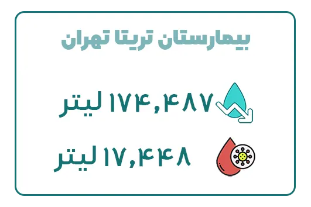
23.بیمارستان دی (تهران) بیمارستان دی با در اختیار داشتن ۲۰۰ تخت ثابت و ۱۹۶ تخت فعال، به عنوان یک بیمارستان درجه یک عمومی، در ردیف یکی از بزرگترین مراکز درمانی تخصصی و فوقتخصصی در سطح کشور فعالیت میکند.
گزارش ها نشان میدهد که با بهرهگیری از کیسههای ساکشن یکبار مصرف ، میزان مصرف آب در این بیمارستان به شکل قابلتوجهی کاهش یافته است؛ میزان صرفهجویی برآورد شده در مصرف آب این بیمارستان بیش از 167٬062 لیتر در طی یک سال است؛ و همچنین 16,706 لیتر خونابه و عفونت جمع آوری شده است.
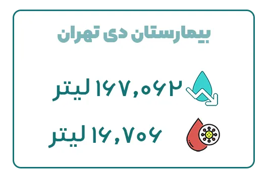
24.بیمارستان پارسا بیمارستان پارسا، واقع در انتهای خیابان ولی عصر نرسیده به میدان راه آهن با بهرهگیری از تجهیزات پیشرفته پزشکی و کادر درمانی مجرب، خدمات گستردهای در حوزههای مختلف درمانی ارائه میدهد.
بیمارستان پارسا موفق به صرفهجویی ۱39٬837 لیتر آب در طی یک سال شده است و این میزان صرفهجویی در مصرف آب تأثیر بسزایی در کاهش هزینههای عملیاتی و حفاظت از منابع آبی دارد. بیمارستان پارسا سالانه توانسته است ۱3،983 لیتر عفونت را با استفاده از کیسه ساکشن یکبار مصرف جمعآوری نماید.
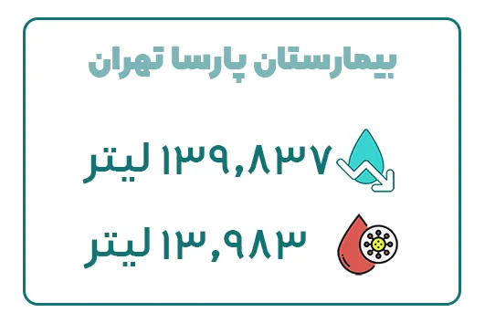
25.بیمارستان گاندی هتل بیمارستان گاندی، واقع در خیابان گاندی جنوبی، پلاک ۱۳۰، با 65 تخت فعال یکی از مراکز تخصصی و فوقتخصصی خصوصی در تهران است؛ بیمارستان گاندی با استفاده از کیسه های ساکشن یکبار مصرف در طی یک سال توانسته است ۱28٬700 لیتر در مصرف آب صرفه جویی نماید و ۱2،870 لیتر عفونت جمع آوری نماید.
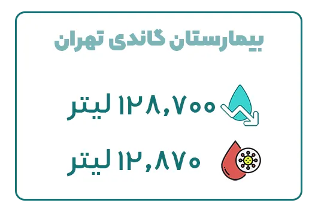
26.بیمارستان آراد بیمارستان آراد یکی از بیمارستانهای خصوصی و درمانی در تهران است که در خیابان سمیه بین خیابان دکتر شریعتی و بهار واقع شده است؛ این بیمارستان با 145 تخت فعال در طی یکسال موفق به صرفه جویی ۱27٬462 لیتر آب و جمع آوری ۱2،746 لیتر عفونت با استفاده از کیسه ساکشن یکبار مصرف گردیده است.
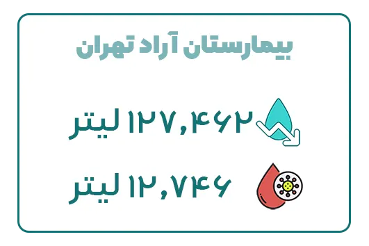
27.بیمارستان مفرح بیمارستان مفرح واقع در یاخچی آباد، اتوبان تندگویان، پل بصیر، میدان بهمنیار، خیابان بهمنیار با 56 تخت فعال به عنوان بیمارستان خیریه فعالیت می نماید.همچنین بیمارستان مفرح موفق به صرفهجویی ۱13٬850 لیتر آب در طی یک سال شده است و این میزان صرفهجویی در مصرف آب تأثیر بسزایی در کاهش هزینههای عملیاتی و حفاظت از منابع آبی دارد. همچنین بیمارستان مفرح سالانه توانسته است ۱1،385 لیتر عفونت را با استفاده از کیسه ساکشن یکبار مصرف جمعآوری نماید.
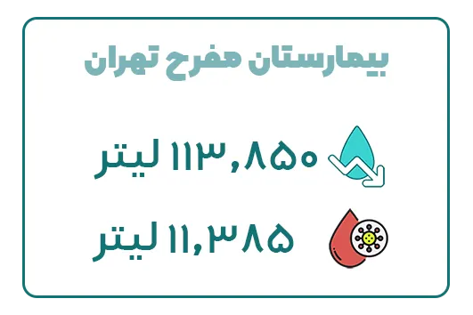
28.بیمارستان مهراد بیمارستان مهراد یکی از بیمارستانهای خصوصی و عمومی (جنرال) در تهران است که در خیابان استاد مطهری، خیابان میرعماد، نبش کوچه ششم واقع شده است؛ در حال حاضر، بیمارستان مهراد با ۱۳۵ تخت فعال با استفاده از کیسههای ساکشن یکبار مصرف توانسته است در طی یکسال ۱10٬137 لیتر آب صرفه جویی نماید.
همچنین بیمارستان مهراد ۱1،013 لیتر عفونت را با استفاده از کیسه های ساکشن یکبار مصرف جمع آوری کرده است.
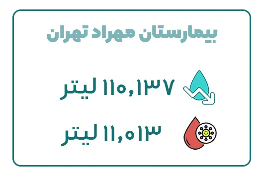
29.بیمارستان کودکان مفید بیمارستان کودکان مفید یکی از مراکز پزشکی آموزشی و درمانی تخصصی و فوق تخصصی کودکان در ایران واقع در تهران، خیابان شریعتی، بالاتر از حسینیه ارشاد، نرسیده به خیابان میرداماد واقع شده است.
در حال حاضر، این مرکز دارای ۳۱۸ تخت فعال است،این بیمارستان با بهرهگیری از کیسههای ساکشن یکبار مصرف آبادیس، توانسته است 105٬187 لیتر آب سالانه صرفهجویی نماید این میزان کاهش مصرف آب، نهتنها به بهبود فرآیندهای بهداشتی کمک کرده است، بلکه در کاهش هزینههای مصرفی بیمارستان نیز اثرگذار بوده است. این مرکز علاوه بر صرفهجویی در مصرف آب توانسته است در طی یک سال 10،518 لیتر عفونت را جمعآوری کند.
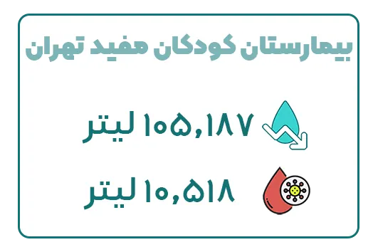
30.بیمارستان ساسان بیمارستان ساسان واقع در میدان ولیعصر، بلوار کشاورز، بعد از چهارراه فلسطین، پلاک ۴۳ با ۲۰۷ تخت فعال موفق به صرفهجویی 89٬347 لیتر آب در طی یک سال شده است و این میزان صرفهجویی در مصرف آب تأثیر بسزایی در کاهش هزینههای عملیاتی و حفاظت از منابع آبی دارد. همچنین این مرکز توانسته است 8،934 لیتر عفونت را با استفاده از کیسه ساکشن یکبار مصرف جمعآوری نماید.
31.بیمارستان کیان بیمارستان کیان، واقع در خیابان دکتر علی شریعتی، دوراهی قلهک، نبش کوچه مرشدی، با ۵۱ تخت فعال، یکی از مراکز درمانی مجهز در تهران محسوب میشود. بررسیها نشان میدهد که استفاده از کیسههای ساکشن یکبار مصرف در این بیمارستان تأثیر چشمگیری بر کاهش مصرف آب داشته است. برآوردها حاکی از آن است که این اقدام منجر به صرفهجویی سالانه بیش از 87,862 لیتر آب شده و همچنین 8,786 لیتر خونابه و مایعات عفونی جمعآوری شده است.
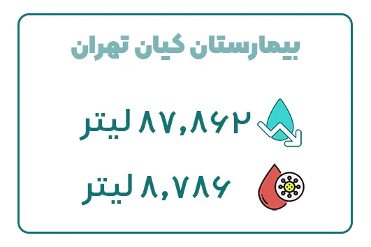
32.بیمارستان فرهیختگان بیمارستان فرهیختگان یکی از بزرگترین و مجهزترین مراکز درمانی، آموزشی و پژوهشی وابسته به دانشگاه آزاد اسلامی است که در تهران انتهای ستاری شمال میدان دانشگاه روبروی سازمان مرکزی دانشگاه آزاد اسلامی واقع شده است. این بیمارستان در سال ۱۳۹۸ با ظرفیت اولیه ۲۰۰ تخت افتتاح شد و در فاز دوم توسعه، ظرفیت آن به ۳۲۰ تخت افزایش یافت.
بیمارستان فرهیختگان با بهرهگیری از کیسههای ساکشن یکبار مصرف، موفق شده است سالانه بیش از ۸۲٬۹۱۲ لیتر در مصرف آب صرفهجویی کند؛ همچنین این بیمارستان توانسته است حدود ۸٬۲۹۱ لیتر خونابه و مایعات عفونی را بهصورت ایمن جمعآوری و دفع نماید.
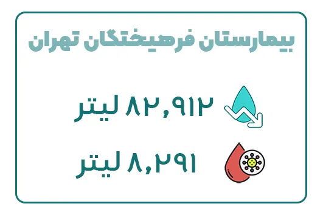
33.بیمارستان ایرانشهر بیمارستان ایرانشهر واقع در خیابان شریعتی، نرسیده به سه راه طالقانی، خیابان شهید جواد كارگر با ظرفیت ۱۲۰ تخت بیمار و ۶ اتاق عمل در زمینی به مساحت ۲۰۰۰ متر مربع و زیربنای تقریبی ۱۱ هزار متر مربع در ۱۰ طبقه احداث شده است.
بررسیها نشان میدهد که پس از استفاده از کیسههای ساکشن یکبار مصرف، میزان مصرف آب در این بیمارستان به شکل قابلتوجهی کاهش یافته است؛ میزان صرفهجویی برآورد شده در مصرف آب این بیمارستان بیش از 79٬200 لیتر در طی یک سال است؛ و همچنین 7,920 لیتر خونابه و عفونت جمع آوری شده است.
34.بیمارستان مدرس بیمارستان شهید مدرس، یکی از مراکز پزشکی، آموزشی و درمانی دولتی و وابسته به دانشگاه علوم پزشکی شهید بهشتی است که در شمال غرب تهران، در تقاطع بزرگراه یادگار امام و خیابان سعادتآباد، بالاتر از میدان کاج واقع شده است. این بیمارستان در سال ۱۳۵۴ تأسیس شده و دارای ۲۷۹ تخت فعال میباشد.
این بیمارستان با استفاده از کیسههای ساکشن یکبار مصرف آبادیس در طی یک سال، موفق به صرفهجویی 79٬200 لیتر آب و جمع آوری 7,920 لیتر عفونت شده است.
35.بیمارستان اختر بیمارستان دولتی اختر واقع در خیابان شریعتی، پل رومی، خیابان شریفیمنش، بنبست آذر تحت نظارت دانشگاه علوم پزشکی شهید بهشتی فعالیت میکند و بهعنوان مرکز عالی فوق تخصصی ارتوپدی شناخته میشود.
این بیمارستان با 118 تخت فعال و با استفاده از کیسه های ساکشن یکبار مصرف آبادیس موفق به صرفهجویی 74٬250 لیتر آب در طی یک سال شده است و این میزان صرفهجویی در مصرف آب تأثیر بسزایی در کاهش هزینههای عملیاتی و حفاظت از منابع آبی دارد. همچنین این مرکز توانسته است 7،425 لیتر عفونت را با استفاده از کیسه ساکشن یکبار مصرف جمعآوری نماید.
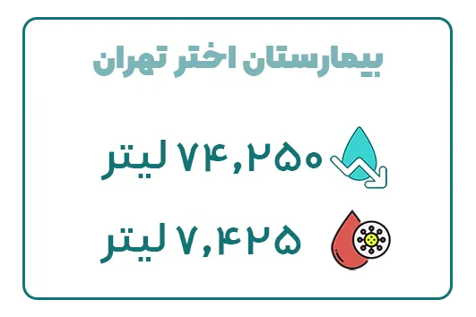
36.بیمارستان فرمانیه بیمارستان فرمانیه واقع در تهران، خیابان شهید لواسانی (فرمانیه)، نرسیده به چهارراه فرمانیه، پلاک ۲۰ یک مرکز تخصصی و فوقتخصصی است که در سال ۱۳۸۹ تأسیس شده و با ۵۲ تخت فعال به ارائه خدمات درمانی میپردازد.
بررسیها نشان میدهد که استفاده از کیسههای ساکشن یکبار مصرف در بیمارستان فرمانیه تأثیر چشمگیری بر کاهش مصرف آب داشته است. برآوردها حاکی از آن است که این اقدام منجر به صرفهجویی سالانه بیش از 66,825 لیتر آب شده و همچنین 6,682 لیتر خونابه و مایعات عفونی جمعآوری شده است.
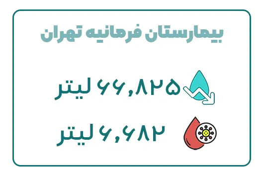
37.بیمارستان آرام بيمارستان فوق تخصصي آرام واقع در کرج، بلوار جمهوری اسلامی، خیابان مسلم بن عقیل غربی، نبش پل شهدای روحانی با بهرهگیری از تجهیزات پیشرفته و کادر پزشکی مجرب، خدمات درمانی متنوعی را به بیماران ارائه میدهد.
این بیمارستان بهواسطه استفاده از کیسه ساکشن یکبار مصرف قادر به کاهش مصرف آب به میزان 65٬615 لیتر در سال بوده است. علاوه بر صرفهجویی در مصرف آب، این بیمارستان توانسته در یک سال 6،561 لیتر عفونت را جمعآوری کند. این تغییر باعث کاهش هزینههای نگهداری تجهیزات و بهبود فرآیندهای بهداشتی در بخشهای مختلف بیمارستان شده است.
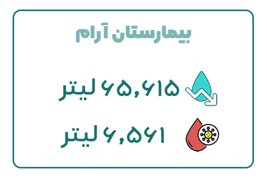
38.بیمارستان البرز بیمارستان خصوصی البرز واقع در خیابان البرز خيابان انقلاب ابتداي خيابان وصال شیرازی در سال ۱۳۴۲ با ظرفیت ۸۰ تخت تأسیس شد؛ این مرکز درمانی با بهرهگیری از کیسههای ساکشن یکبار مصرف، توانسته است 47,025لیتر آب در طول یک سال صرفهجویی نماید. همچنین این مرکز درمانی موفق به جمع آوری سالانه 4,702 لیتر عفونت گردیده است.
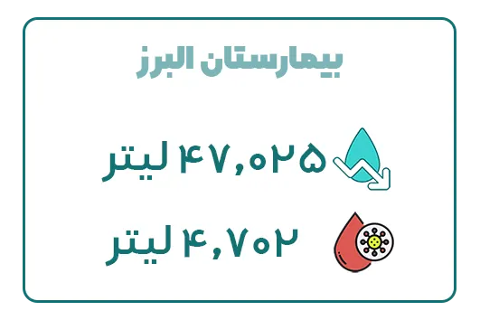
39.بیمارستان الغدیر بیمارستان الغدیر تهران بهعنوان یک بیمارستان خیریه فعالیت میکند. این مرکز درمانی با ۱۸۳ تخت فعال واقع در تهران، میدان رسالت، بلوار هنگام، میدان الغدیر خدمات پزشکی عمومی و تخصصی را به بیماران ارائه میدهد.
بیمارستان الغدیر موفق به صرفهجویی 44٬550 لیتر آب در طی یک سال شده است و این میزان صرفهجویی در مصرف آب تأثیر بسزایی در کاهش هزینههای عملیاتی و حفاظت از منابع آبی دارد. همچنین بیمارستان الغدیر سالانه توانسته است 4،455 لیتر عفونت را با استفاده از کیسه ساکشن یکبار مصرف جمعآوری نماید.
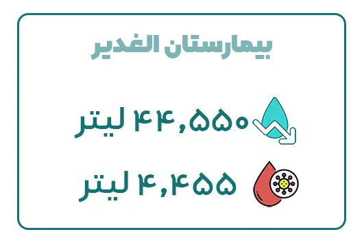
40.بیمارستان مردم بیمارستان مردم تهران واقع در میدان شهدا، خیابان شکوفه، خیابان کرمان یک مرکز درمانی خصوصی است که خدمات پزشکی تخصصی و فوقتخصصی را به بیماران ارائه میدهد. این مرکز درمانی شامل بخش های بستری: ICU جنرال،POST CCU و قلب،CCU، جراحی عمومی، جراحی زنان و زایمان، اطفال، نوزادان است.
این بیمارستان با استفاده از کیسههای ساکشن یکبار مصرف آبادیس در طی یک سال، موفق به صرفهجویی 43٬422 لیتر آب و جمع آوری 4,342 لیتر عفونت شده است.
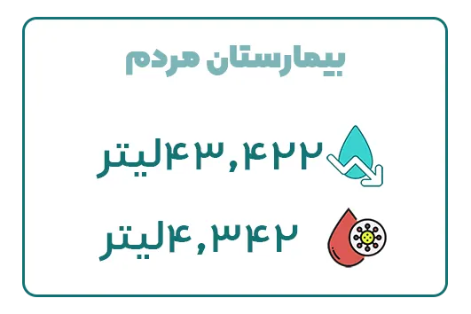
یافتههای این پژوهش نشان میدهد که استفاده از کیسه ساکشن یکبار مصرف آبادیس، تأثیر بسزایی در کاهش مصرف آب و بهبود بهداشت محیط بیمارستانی دارد. کاهش مصرف آب، علاوه بر مزایای زیستمحیطی، منجر به کاهش هزینههای عملیاتی بیمارستانها شده است. علاوه بر این، همکاری مستمر بین کادر درمانی و تیم فنی آبادیس از طریق فرآیند PMCF، به ارتقای کیفیت و عملکرد این تجهیزات کمک کرده است. بنابراین، گسترش استفاده از این فناوری در مراکز درمانی میتواند به عنوان یک راهکار مؤثر در بهینهسازی مصرف منابع و افزایش سطح استانداردهای بهداشتی بیمارستانی مورد توجه قرار گیرد.
منابع
- وبسایت رسمی بیمارستان میلاد. https://miladhospital.com
- وبسایت رسمی بیمارستان تندیس. https://tandishospital.com
- وبسایت رسمی بیمارستان نیکان. https://nikanhospital.com
- وبسایت رسمی بیمارستان اختر. https://akhtarhospital.ir
- وبسایت رسمی مجتمع بیمارستانی یاس. https://yashospital.ir
- وبسایت رسمی شرکت آبادیس. https://abadis-med.com
- WHO – مدیریت پسماندهای بیمارستانی و کاهش مصرف آب. https://www.who.int
- مقالات علمی منتشر شده در زمینه مدیریت پسماندهای بیمارستانی و کاهش مصرف آب.
- مصاحبههای انجامشده با مدیران بیمارستانها و متخصصان تجهیزات پزشکی در ایران.